Fundamentals of
Data Analytics and
Predictions
Non-Linear Models
Xi (Rossi) LUO
Department of Biostatistics and Data Science
School of Public Health
The University of Texas Health Science Center at
Houston
Moving Beyond Linearity
- The truth is never linear! Or almost never!
- But often the linearity assumption is good enough
- When its not . . .
- Polynomials
- Step functions
- Splines
- Generalized additive models
- Offer a lot of flexibility, without losing the ease and interpretability of linear models
Example Wage Dataset
- Mid-Atlantic Wage Data: Wage and other data for a group of 3000 male workers in the
Mid-Atlantic region
- plot(age, wage, main="Wage-data", xlab="age", ylab="wage", col="darkgrey")
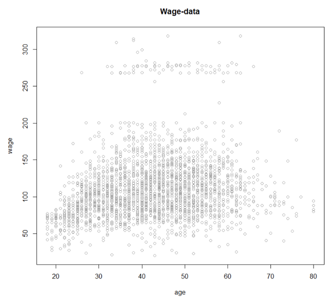
Polynomial Regression —1
- fit=lm(wage~poly(age,4), data=Wage), or
- fit=lm(wage~age+I(age^2)+I(age^3)+I(age^4), data=Wage)
- In the figure, we have computed the fit and pointwise standard errors on a grid of values
for Age
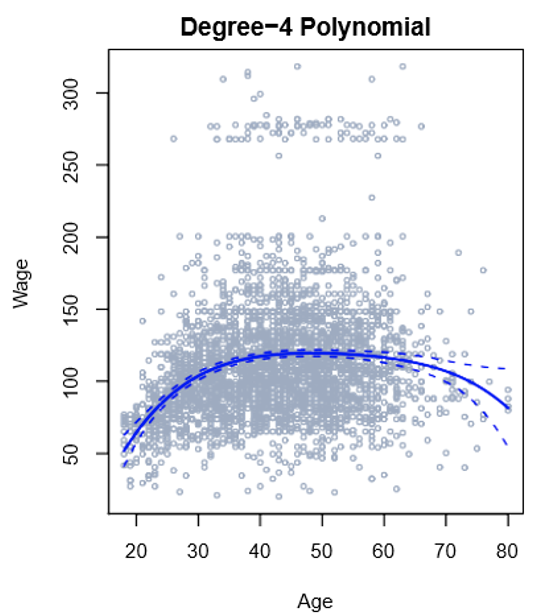
$$y_i=\beta_0+\beta_1x_i+\beta_2x_i^2+\beta_3x_i^3+\dots+\beta_dx_i^d+\epsilon$$
Polynomial Regression —2
- Create new variables $X_1 = X, X_2 = X^2$, etc. and then treat as multiple linear regression
- Not really interested in the coefficients; more interested in the fitted function values at any
value $x_0$: $\hat
f(x_0)=\hat\beta_0+\hat\beta_1x_0+\hat\beta_2x_0^2+\hat\beta_3x_0^3+\hat\beta_4x_0^4$
- How to choose polynomial degree d ?
- Use cross-validation to choose d
Polynomial Logistic Regression
- Logistic regression follows naturally, for example
$P(y_i \gt 250\mid
x_i)=\frac{\exp(\beta_0+\beta_1x_i+\beta_2x_i^2+\beta_3x_i^3+\dots+\beta_dx_i^d)}{1+\exp(\beta_0+\beta_1x_i+\beta_2x_i^2+\beta_3x_i^3+\dots+\beta_dx_i^d)}$
Polynomial Regression Tail Behaviors
- Using polynomial functions of the features as predictors in a linear model imposes a
global structure on the non-linear function of X
- Polynomials have notorious tail behavior $-$ very bad for extrapolation
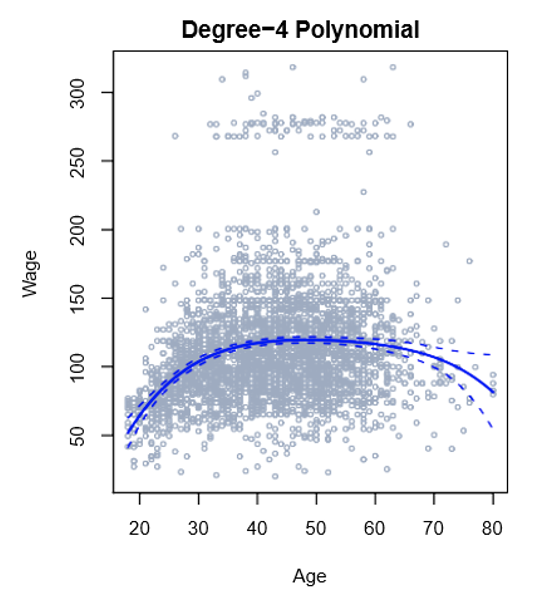
Step Function -1
- In order to avoid imposing such a global structure, we can instead use step functions
- Here we break the range of X into bins, and fit a different constant in each bin
- A way of creating transformations of a variable — cut the variable into distinct regions
$C_1(X)=I(X\lt 25)$,
$C_2(X)=I(25 \le X\lt 40)$,
$\dots$
$C_4(X)=I(X\ge 65)$
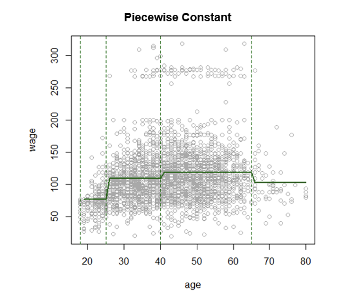
Step Functions —2
- Easy to work with,
- Create a series of dummy variables representing each group
- Useful for creating summary reports
- Useful for creating interactions,
- For example, interaction effect of Year and Age: $I(Year \lt 2005)*Age, I(Year \ge
2005)*Age$
would allow for different linear functions in each age category
- In R: $I(year\lt 2005)$. You can also use cut(age, c(18, 25, 40, 65, 90))
- Choice of cutpoints or knots can be problematic
Piecewise Polynomials —1
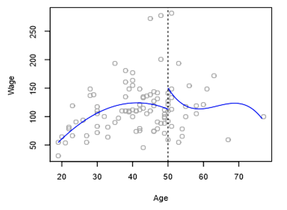
- Instead of a single polynomial in X over its whole domain, we can rather use different
polynomials in regions defined by knots
$y_i= \begin{cases}
\beta_{01}+\beta_{11}x_i+\beta_{21}x_i^2+\beta_{31}x_i^3+\dots+\beta_{d1}x_i^d+\epsilon_i, if
x_i \lt c \\
\beta_{02}+\beta_{12}x_i+\beta_{22}x_i^2+\beta_{32}x_i^3+\dots+\beta_{d2}x_i^d+\epsilon_i, if
x_i \gt c\end{cases} $
Piecewise Polynomials —2
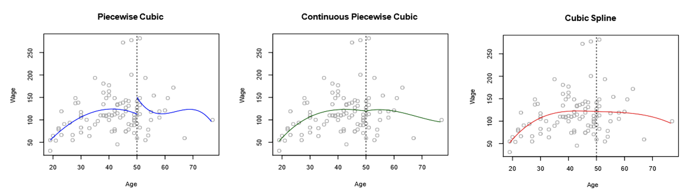
- Better to add constraints to the polynomials, e.g. continuity & smoothness
- Splines: continuity with smoothness
Splines
- A cubic spline with knots at $\epsilon_k, k = 1, . . . , K$ is a piecewise cubic polynomial
with continuous derivatives up to order 2 at each knot.
- Linear Spline
- fit=lm(wage~bs(age,knots=c(50), degree=1), data=Wage)
- Cubic Spline
- fit=lm(wage~bs(age,knots=c(25,40,65)), data=Wage)
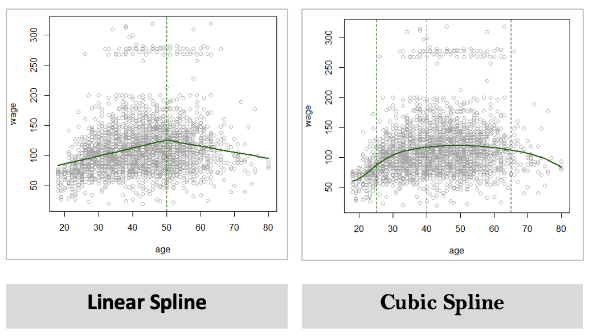
Natural Splines
- A natural cubic spline extrapolates linearly beyond the boundary knots.
- Fitting splines in R is easy: bs(x, ...) for any degree splines, and ns(x, ...) for natural
cubic splines, in package splines.
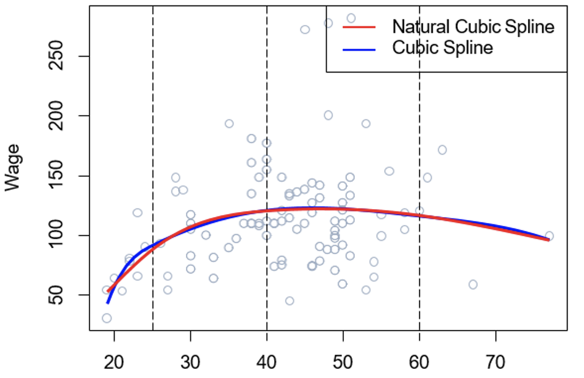
Knot Placement —1
- One strategy is to decide K, the number of knots, and then place them at appropriate quantiles
of the observed X
- It is common to place knots in a uniform fashion
- Have R automatically place the corresponding number of knots at uniform quantiles of the
data
- Another strategy; place more knots in places where you feel the function might vary most
rapidly, and place fewer knots where it seems more stable
- degrees of freedom = coefs + knots
- A cubic spline with K knots has K + 4 parameters (DoF)
- A natural spline with K knots has K DoF.
Knot Placement -2
- How many knots should we use, or equivalently how many degrees of freedom should our spline
contain?
- Try out different numbers of knots and see which produces the best looking curve (use
cross-validation)
Splines vs. Polynomials
- Regression splines often give superior results to polynomial regression
- Splines introduce flexibility by increasing the number of knots but keeping the degree fixed
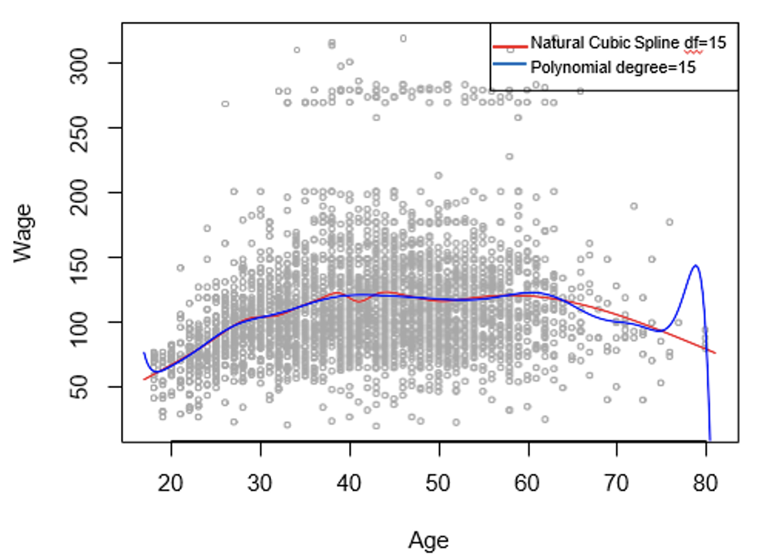
Smoothing Splines —1
- A natural spline, with a knot at every unique value of $x_i$
- avoid the knot-selection issue, leaving a single $\lambda$ to be chosen
($\lambda$: tuning parameter controls smoothness)
- In R, the function smooth.spline() will fit a smoothing spline
- We can also specify df rather than $\lambda$
- smooth.spline(age, wage, df=16)
- The leave-one-out (LOO) cross-validated error
- smooth.spline(age, wage, cv=TRUE)
Smoothing Splines —2
- smooth.spline(age, wage, df=16)
- smooth.spline(age, wage, cv=TRUE)
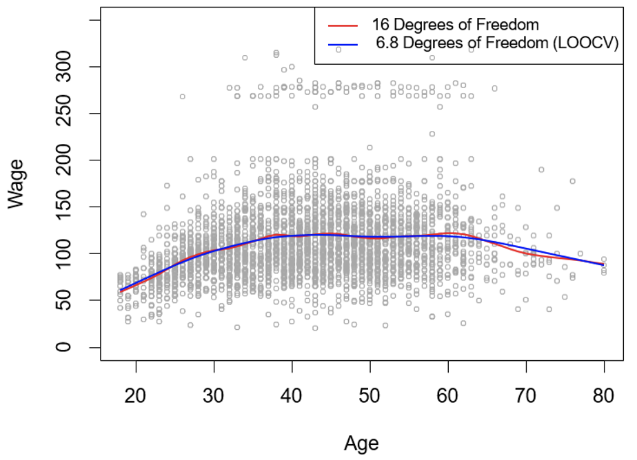
Generalized Additive Models
Generalized Additive Models —1
- Allows for flexible nonlinearities in several variables but retains the additive structure of
linear models
- $y_i=\beta_0+f_1(x_{i1})+f_2(x_{i2})+\dots+f_p(x{ip})+\epsilon_i$
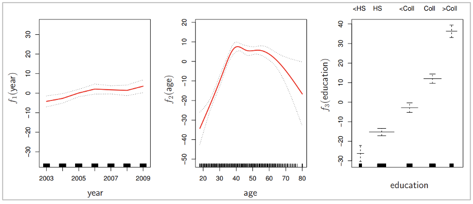
Generalized Additive Models —2
- Fit a GAM, for example using natural splines,
- lm(wage ~ ns(year, df = 5) + ns(age, df = 5)) or
- gam(wage ~ ns(year, df = 5) + ns(age, df = 5))
- Can mix terms - some linear, some nonlinear
- Can use smoothing splines as well
- gam(wage ~ s(year, df = 5) + s(age, span = .5))
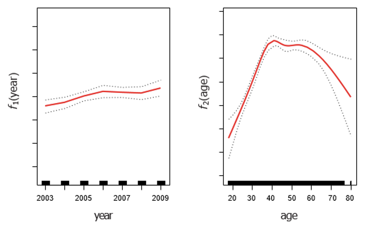
Pros and Cons of GAMs
- Pros:
- Can fit a non-linear $f_j$ to each $x_j$ so haven't go manually try many different
transformations on each variable individually
- Can get more accurate predictions of Y if the relationship is nonlinear
- Can examine the effect of each $x_j$ on Y individually while holding other variables fixed.
This is useful for inference
- Cons:
- Restricted to be additive
- Interactions may be missed (but can add interactions)
- May be too many parameters to estimate given size of data